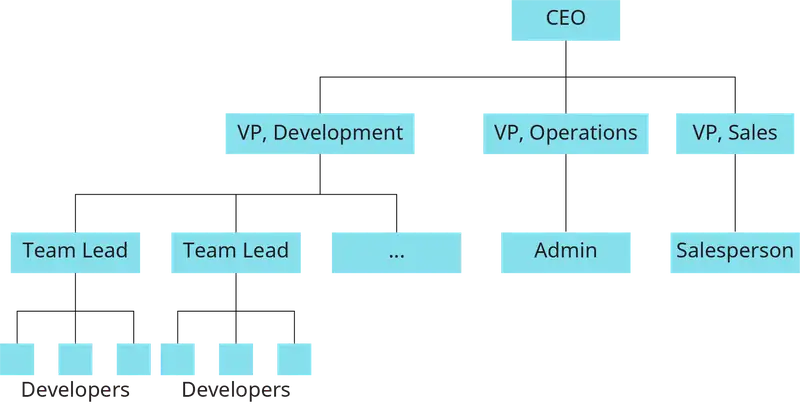
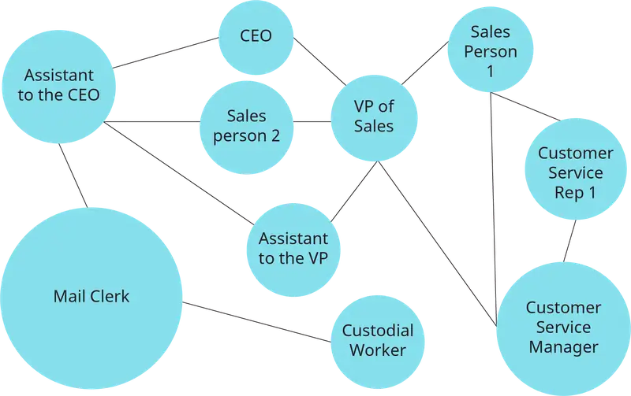
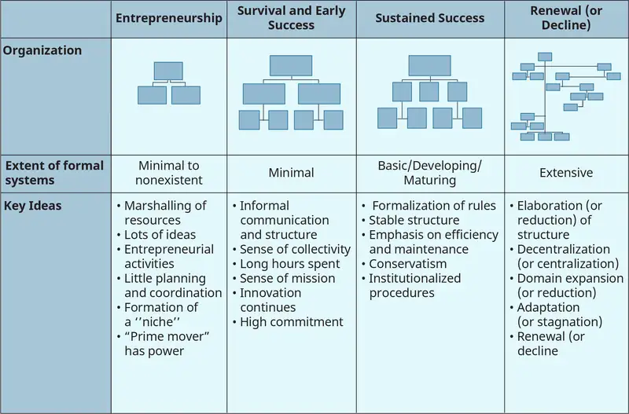
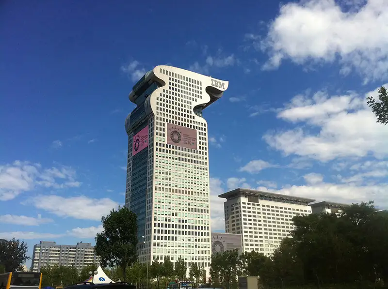
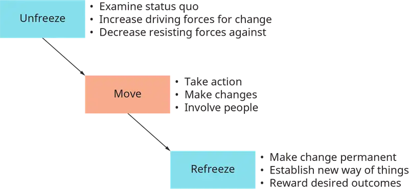
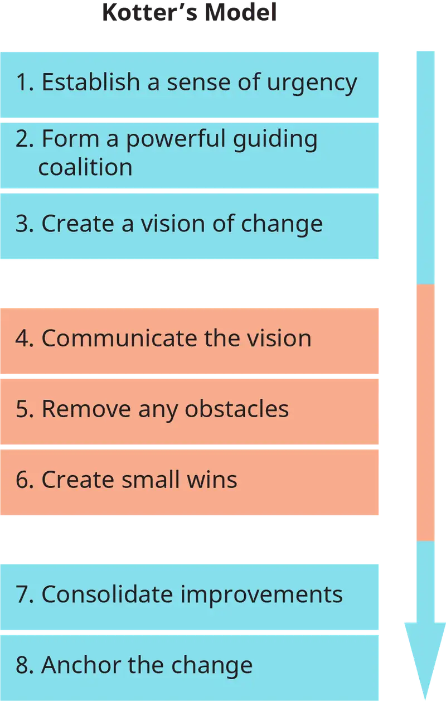
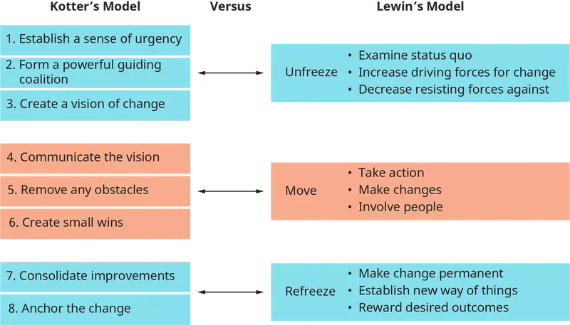

Chapter 10: Organizational Structure and Change¶
Introduction¶
Learning Outcomes
After reading this chapter, you should be able to answer these questions:
- What are mechanistic versus organic organizational structures?
- What are the fundamental dimensions of change?
- How do managers deal with change?
Exploring Managerial Careers: Jackie Smith, CareSource University
Jackie Smith is a human resources, training and organizational development professional with more than 20 years of experience. She has worked in a variety of organizations and industries in both the for-profit and not-for-profit sectors.
Jackie is vice president of CareSource University at CareSource, a Medicaid managed care organization. She oversees CareSource University as well as the company’s performance management, succession, and goal-setting processes. In 2017 CSU delivered more than 240,000 learning hours, coached 300 leaders, and onboarded 1,100 new hires. CareSource University has been nationally recognized for seven years as one of Training magazine’s Top 125 training organizations, ranking in the top 19 for six years. In 2017, CSU was named to the global Learning Elite, ranking 18th among worldwide organizations. Prior to CareSource, Jackie was president of Reflections on Learning, a performance-consulting firm, and worked as a senior organizational development consultant, regional human resources manager, training specialist, and manager in the financial services, retail, and transportation industries.
Jackie’s instructional focus has been in the area of leadership development, designing programs including:
- Developing Your Leadership Vision
- Leading through Extraordinary Change
- Transforming Team Performance through Dialogue
- Building Sustainable Strategy with Appreciative Inquiry
Her educational background includes a BS in education from Miami University, Ohio and Luxembourg and an MS in organizational development and leadership from St. Joseph’s University in Philadelphia. In addition, she has served as an adjunct faculty member at Antioch McGregor University and is a certified facilitator in a variety of training and development programs, organizational assessments, and Myers-Briggs profiling. She also serves as a team leader facilitating business strategy sessions in countries around the world including Ecuador, Jordan, Guinea, and Senegal.
This chapter will cover several concepts that deal with how leaders develop and shape organizations. An understanding of the concepts in this chapter is essential for leaders who need to pull people together to accomplish the essential work of a business in a consistent process over time. We will address the essential ideas.
10.1 Organizational Structures and Design¶
- What are mechanistic versus organic organizational structures?
First, an organizational structure is a system for accomplishing and connecting the activities that occur within a work organization. People rely on structures to know what work they should do, how their work supports or relies on other employees, and how these work activities fulfill the purpose of the organization itself.
Second, organizational design is the process of setting up organizational structures to address the needs of an organization and account for the complexity involved in accomplishing business objectives.
Next, organizational change refers to the constant shifts that occur within an organizational system—for example, as people enter or leave the organization, market conditions shift, supply sources change, or adaptations are introduced in the processes for accomplishing work. Through managed change, leaders in an organization can intentionally shape how these shifts occur over time.
Finally, organizational development (OD) is the label for a field that specializes in change management. OD specialists draw on social science to guide change processes that simultaneously help a business achieve its objectives while generating well-being for employees and sustainable benefits for society. An understanding of OD practices is essential for leaders who want to maximize the potential of their organizations over a long period of time.
Together, an understanding of these concepts can help managers know how to create and direct organizations that are positioned to successfully accomplish strategic goals and objectives.
To understand the role of organizational structure, consider the experience of Justin, a young manager who worked for a logistics and transportation company. Their success at leading change in the United States gave their leaders the confidence that Justin could handle a challenging assignment: organize a new supply chain and distribution system for a company in Northern Europe. Almost overnight, Justin was responsible for hiring competent people, forming them into a coherent organization, training them, and establishing the needed infrastructure for sustained success in this new market.
If you were given this assignment, what would you do? How would you organize your employees? How would you help them understand the challenge of setting up a new organization and system? These are the kinds of questions that require an understanding of organizational structure, organizational design, organizational change, and organizational development.
One of the first issues Justin will need to address deals with how they will organize the system. “The decisions about the structure of an organization are all related to the concept of organizational design. There are two fundamental forms of structure to remember when designing an organization.
To address these questions, we need to be familiar with two fundamental ways of building an organization.
The formal organization is an officially defined set of relationships, responsibilities, and connections that exist across an organization. The traditional organizational chart, as illustrated in Figure 10.2, is perhaps the most common way of depicting the formal organization. The typical organization has a hierarchical form with clearly defined roles and responsibilities.

When Justin sets up the formal organization, they will need to design the administrative responsibilities and communication structures that should function within an organizational system. The formal systems describe how flow of information and resources should occur within an organization. To establish the formal organization, they will identify the essential functions that need to be part of the system, and they will hire people to fill these functions. They will then need to help employees learn their functions and how these functions should relate to one another.
The informal organization is sometimes referred to as the invisible network of interpersonal relationships that shape how people actually connect with one another to carry out their activities. The informal organization is emergent, meaning that it is formed through the common conversations and relationships that often naturally occur as people interact with one another in their day-to-day relationships. It is usually complex, impossible to control, and has the potential to significantly influence an organization’s success.
As depicted in Figure 10.3, the informal organization can also be mapped, but it is usually very different than the formal organization. The chart you see in this example is called a network map, because it depicts the relationships that exist between different members of a system. Some members are more central than others, and the strength of relationships may vary between any two pairs or groups of individuals. These relationships are constantly in flux, as people interact with new individuals, current relationships evolve, and the organization itself changes over time.

The informal organization in Justin’s design will form as people begin interacting with one another to accomplish their work. As this occurs, people will begin connecting with one another as they make sense of their new roles and relationships. Usually, the informal organization closely mirrors the formal organization, but often it is different. People quickly learn who the key influencers are within the system, and they will begin to rely on these individuals to accomplish the work of the organization. The informal organization can either help or hinder an organization’s overall success.
In sum, the formal organization explains how an organization should function, while the informal organization is how the organizational actually functions. Formal organization will come as Justin hires and assigns people to different roles. They can influence the shape of the informal organization by giving people opportunities to build relationships as they work together. Both types of structures shape the patterns of influence, administration, and leadership that may occur through an organizational system.
As we continue our discussion of structure and design, we will next examine different ways of understanding formal structure.
Types of Formal Organizational Structures¶
Now, Justin will need to choose and implement an administrative system for delegating duties, establishing oversight, and reporting on performance. They will do this by designing a formal structure that defines the responsibilities and accountability that correspond to specific duties throughout an organizational system. In this section, we’ll discuss the factors that any manager should consider when designing an organizational structure.
Bureaucracy¶
One of the most common frameworks for thinking about these issues is called the bureaucratic model. It was developed by Max Weber, a 19th-century sociologist. Weber’s central assumption was that organizations will find efficiencies when they divide the duties of labor, allow people to specialize, and create structure for coordinating their differentiated efforts, usually within a hierarchy of responsibility. He proposed five elements of bureaucracy that serve as a foundation for determining an appropriate structure: specialization, command-and-control, span of control, centralization, and formalization.
Specialization¶
The degree to which people are organized into subunits according to their expertise is referred to as specialization—for example, human resources, finance, marketing, or manufacturing. It may also include specialization within those functions. For instance, people who work in a manufacturing facility may be well-versed in every part of a manufacturing process, or they may be organized into specialty units that focus on different parts of the manufacturing process, such as procurement, material preparation, assembly, quality control, and the like.
Command-and-Control¶
The next element to consider is the reporting and oversight structure of the organization. Command-and-control refers to the way in which people report to one another or connect to coordinate their efforts in accomplishing the work of the organization.
Span of Control¶
Another question addresses the scope of the work that any one person in the organization will be accountable for, referred to as span of control. For instance, top-level leaders are usually responsible for all of the work of their subordinates, mid-level leaders are responsible for a narrower set of responsibilities, and ground-level employees usually perform very specific tasks. Each manager in a hierarchy works within the span of control of another manager at a level of the organization.
Centralization¶
The next element to consider is how to manage the flows of resources and information in an organization, or its centralization. A highly centralized organization concentrates resources in only one or very few locations, or only a few individuals are authorized to make decisions about the use of resources. In contrast, a diffuse organization distributes resources more broadly throughout an organizational system along with the authority to make decisions about how to use those resources.
Formalization¶
The last element of bureaucracy, formalization, refers to the degree of definition in the roles that exist throughout an organization. A highly formalized system (e.g., the military) has a very defined organization, a tightly structured system, in which all of the jobs, responsibilities, and accountability structures are very clearly understood. In contrast, a loosely structured system (e.g., a small, volunteer nonprofit) relies heavily on the emergent relationships of informal organization.
Mechanistic and Organic Structures¶
Using the principles of bureaucracy outlined above, managers like Justin have experimented with many different structures as way to shape the formal organization and potentially to capture some of the advantages of the informal organization. Generally, the application of these principles leads to some combination of the two kinds of structures that can be seen as anchors on a continuum (see Table 10.1).
Table 10.1 (Attribution: Copyright Rice University, OpenStax, under CC-BY 4.0 license)
| Elements of Organizational Structure and Their Relationship to Mechanistic and Organic Forms | ||
|---|---|---|
| Mechanistic | Organic | |
| Highly formalized | Standardization | Low |
| High/Narrow | Specialization | Low/Broad |
| Centralized | Centralization | Decentralized |
| Functional | Departmentalization | Divisional |
On one end of the continuum is mechanistic bureaucratic structure. This is a strongly hierarchical form of organizing that is designed to generate a high degree of standardization and control. Mechanistic organizations are often characterized by a highly vertical organizational structure, or a “tall” structure, due to the presence of many levels of management. A mechanistic structure tends to dictate roles and procedure through strong routines and standard operating practices.
In contrast, an organic bureaucratic structure relies on the ability of people to self-organize and make decisions without much direction such that they can adapt quickly to changing circumstances. In an organic organization, it is common to see a horizontal organizational structure, in which many individuals across the whole system are empowered to make organizational decision. An organization with a horizontal structure is also known as a flat organization because it often features only a few levels of organizational hierarchy.
The principles of bureaucracy outlined earlier can be applied in different ways, depending on the context of the organization and the managers’ objectives, to create structures that have features of either mechanistic or organic structures.
For example, the degree of specialization required in an organization depends both on the complexity of the activities the organization needs to account for and on the scale of the organization. A more organic organization may encourage employees to be both specialists and generalists so that they are more aware of opportunities for innovation within a system. A mechanistic organization may emphasize a strong degree of specialization so that essential procedures or practices are carried out with consistency and predictable precision. Thus, an organization’s overall objectives drive how specialization should be viewed. For example, an organization that produces innovation needs to be more organic, while an organization that seeks reliability needs to be more mechanistic.
Similarly, the need for a strong environment of command-and-control varies by the circumstances of each organization. An organization that has a strong command-and-control system usually requires a vertical, tall organizational administrative structure. Organizations that exist in loosely defined or ambiguous environments need to distribute decision-making authority to employees, and thus will often feature a flat organizational structure.
The span of control assigned to any specific manager is commonly used to encourage either mechanistic or organic bureaucracy. Any manager’s ability to attend to responsibilities has limits; indeed, the amount of work anyone can accomplish is finite. A manager in an organic structure usually has a broad span of control, forcing her to rely more on subordinates to make decisions. A manager in a mechanistic structure usually has a narrow span of control so that they can provide more oversight. Thus, increasing span of control for a manager tends to flatten the hierarchy while narrowing span of control tends to reinforce the hierarchy.
Centralization addresses assumptions about how an organization can best achieve efficiencies in its operations. In a mechanistic structure, it is assumed that efficiencies will occur in the system if the resources and decisions flow through in a centralized way. In an organic system, it is assumed that greater efficiencies will be seen by distributing those resources and having the resources sorted by the users of the resources. Either perspective may work, depending on the circumstances.
Finally, managers also have discretion in how tightly they choose to define the formal roles and responsibilities of individuals within an organization. Managers who want to encourage organic bureaucracy will resist the idea of writing out and tightly defining roles and responsibilities. They will encourage and empower employees to self-organize and define for themselves the roles they wish to fill. In contrast, managers who wish to encourage more mechanistic bureaucracy will use tools such as standard operating procedures (SOPs) or written policies to set expectations and exercise clear controls around those expectations for employees.
When a bureaucratic structure works well, an organization achieves an appropriate balance across all of these considerations. Employees specialize in and become highly advanced in their ability to perform specific functions while also attending to broader organizational needs. They receive sufficient guidance from managers to stay aligned with overall organizational goals. The span of control given to any one manager encourages them to provide appropriate oversight while also relying on employees to do their part. The resources and decision-making necessary to accomplish the goals of the organization are efficiently managed. There is an appropriate balance between compliance with formal policy and innovative action.
Business Structures¶
Aside from the considerations outlined above, organizations will often set structures according to the functional needs of the organization. A functional need refers to a feature of the organization or its environment that is necessary for organizational success. A business structure is designed to address these organizational needs. There are two common examples of functional structures illustrated here.
Product structures exist where the business organizes its employees according to product lines or lines of business. For example, employees in a car company might be organized according to the model of the vehicle that they help to support or produce. Employees in a consulting firm might be organized around a particular kind of practice that they work in or support. Where a functional structure exists, employees become highly attuned to their own line of business or their own product.
Geographic structures exist where organizations are set up to deliver a range of products within a geographic area or region. Here, the business is set up based on a territory or region. Managers of a particular unit oversee all of the operations of the business for that geographical area.
In either functional structure, the manager will oversee all the activities that correspond to that function: marketing, manufacturing, delivery, client support systems, and so forth. In some ways, a functional structure is like a smaller version of the larger organization—a smaller version of the bureaucracy that exists within the larger organization.
One common weakness of a bureaucratic structure is that people can become so focused on their own part of the organization that they fail to understand or connect with broader organizational activities. In the extreme, bureaucracy separates and alienates workers from one another. These problems can occur when different parts of an organization fail to communicate effectively with one another.
Some organizations set up a matrix structure to minimize the potential for these problems. A matrix structure describes an organization that has multiple reporting lines of authority. For example, an employee who specializes in a particular product might have both the functional reporting line and a geographic reporting line. This employee has accountability in both directions. The functional responsibility has to do with her specialty as it correlates with the strategy of the company as a whole. However, her geographic accountability is to the manager who is responsible for the region or part of the organization in which she is currently working. The challenge is that an employee may be accountable to two or more managers, and this can create conflict if those managers are not aligned. The potential benefit, however, is that employees may be more inclined to pay attention to the needs of multiple parts of the business simultaneously.
Concept Check
What is an organizational structure?
What are different types of organizational structures?
What is organizational design?
What concepts should guide decisions about how to design structures?
10.2 Organizational Change¶
- What are the fundamental dimensions of change?
Our discussion about organizational structure to this point has focused on the forms that an organization might take and the options that are available to managers as they design structures for their organizations. However, organizations are constantly evolving. One common refrain is that "there is nothing so constant as change." Because of this, there is no one best way to organize in all circumstances. Effective managers need to be aware of the various factors that drive the need for change. There advantages and disadvantages of each the various forms of organizing we have discussed. Managers need to adapt the organization so that it is ideally situated to accomplish current organizational goals. Thus, effective managers need to know how to plan and implement change to achieve organizational success.
We will begin this section by reviewing the types of changes that may occur in an organization. Then we will explore the organizational life cycle model, which explains how the structural needs of an organization evolve over time.
Types of Change¶
There are many different types of changes in organizations. The first, consistent with what we talked about so far in this chapter, is structural change. This has to do with the changes in the overall formal relationships within an organization. Examples of structural change include reorganizing departments or business units, adding employee positions, or revising job roles and assignments. These changes should be made to support broader objectives such as to centralize or decentralize operations, empower employees, or find greater efficiencies.
Another common type of change is technological change. Implementation of new technologies is often forced upon an organization as the environment shifts. For example, an industry upgrade in a commonly used software platform may require that employees learn new ways of working. Upgraded machinery or hardware may require employees to learn new procedures or restructure the way that they interact with one another. The advent of web-based cloud technologies is an example from the last decade and an example of ways which new forms of collaboration are becoming more available. Technological change often induces structural change because it requires different ways of connecting across an organizational system.
A third type of organizational change is culture change. Organizational culture refers to the common patterns of thinking and behaving within an organization. Culture is rooted in the underlying beliefs and assumptions that people hold of themselves and of the organization. These beliefs and assumptions create mindsets that shape the culture. Culture change is among the most difficult kinds of changes to create within an organizational system. It often involves reshaping and reimagining the core identity of the organization. A typical culture change process, if it is successful, requires many years to achieve.
The Organizational Life Cycle¶
Most organizations begin as very small systems that feature very loose structures. In a new venture, nearly every employee might contribute to many aspects of an organization’s work. As the business grows, the workload increases, and more workers are needed. Naturally, as the organization hires more and more people, employees being to specialize. Over time, these areas of specialization mature through differentiation, the process of organizing employees into groups that focus on specific functions in the organization. Usually, differentiated tasks should be organized in a way that makes them complementary, where each employee contributes an essential activity that supports the work and outputs of others in the organization.
The patterns and structures that appear in an organization need to evolve over time as an organization grows or declines, through four predictable phases (see Figure 10.5). In the entrepreneurship phase, the organization is usually very small and agile, focusing on new products and markets. The founders typically focus on a variety of responsibilities, and they often share frequent and informal communication with all employees in the new company. Employees enjoy a very informal relationship, and the work assignments are very flexible. Usually, there is a loose, organic organizational structure in this phase.

The second phase, survival and early success, occurs as an organization begins to scale up and find continuing success. The organization develops more formal structures around more specialized job assignments. Incentives and work standards are adopted. The communication shifts to a more formal tone with the introduction of hierarchy with upper- and lower-level managers. It becomes impossible for every employee to have personal relationships with every other employee in the organization. At this stage, it becomes appropriate to introduce mechanistic structures that support the standardization and formalization required to create effective coordination across the organization.
In a third phase, sustained success or maturity, the organization expands and the hierarchy deepens, now with multiple levels of employees. Lower-level managers are given greater responsibility, and managers for significant areas of responsibility may be identified. Top executives begin to rely almost exclusively on lower-level leaders to handle administrative issues so that they can focus on strategic decisions that affect the overall organization. At this stage, the mechanistic structures of the organization are strengthened, and functional structures may be introduced. Often, tension emerges over how to find balance in the structure. Most organizations at this stage of development need to have elements of a mechanistic bureaucracy while maintaining an environment that allows for the innovation and flexibility that is a feature of an organic structure.
A transition to the fourth phase, renewal or decline, occurs when an organization expands to the point that its operations are far-flung and need to operate somewhat autonomously. Functional structures become almost essential, and subunits may begin to operate as independent businesses. Often, the tensions in the company between mechanistic and organic inclinations may be out of balance. To address these issues, the organization has to be reorganized or restructured to achieve higher levels of coordination between and among different groups or subunits. Managers may need to address fundamental questions about the overall direction and administration of the organization.
To summarize, the key insight about the organizational life cycle is that the needs of an organization will evolve over time. Different structures are needed at different stages as an organization develops. The needs of employees will also change. An understanding of the organizational life cycle provides a framework for thinking about changes that may be needed over time.
Dimensions of Change¶
When considering how to assess the need for change in an organization, it can be helpful to think of three dimensions: the scope of change, the level of change, and the intentionality of change.
The first, the scope of change refers to the degree to which the required change will disrupt current patterns and routines. Incremental change refers to small refinements in current organizational practices or routines that do not challenge, but rather build on or improve, existing aspects and practices within the organization. Common incremental change practices are LEAN and Six Sigma, which are used to find relatively small changes that can generate greater efficiencies in a process. An organization can improve its product-line efficiencies by identifying small discrepancies in process, then fixing them in a systematic way. Incremental change does not typically challenge people to be at the edge of their comfort zone.
In contrast, transformational change refers to significant shifts in an organizational system that may cause significant disruption to some underlying aspect of the organization, its processes, or structures. Transformational change can be invigorating for some employees, but also highly disruptive and stressful for others. Examples of transformational change include large systems changes and organizational restructuring. Culture change often requires transformational change to be successful.
Finally, a strategic change is a change, either incremental or transformational, that helps align an organization’s operations with its strategic mission and objectives. This kind of change is necessary for an organization to achieve the focus it needs to make needed transfer missions and work to stay competitive in the current or larger organization, larger market environment, or societal environment.
The level of change refers to the breadth of the systems that need to be changed within an organization. Individual-level change focuses on how to help employees to improve some active aspect of their performance or the knowledge they need to continue to contribute to the organization in an effective manner. Individual-level change programs include leadership development, training, and performance management. Group-level change centers on the relationships between people and usually focuses on helping people to work more effectively together. Team development, or teambuilding, is one of the most common forms of a team change process. Organization-level change is a change that affects an entire organizational system or several of its units. Strategic planning and implementation is perhaps the most common type of organization-level change. Higher-level change programs usually require changes at lower levels—an organization-level change may require change at both team and individual levels as well.
Intentionality is the final dimension of change and refers to the degree to which the change is intentionally designed or purposefully implemented. Planned change is an intentional activity or set of intentional activities that are designed to create movement toward a specific goal or end. Planned change processes often involve large groups of people and step-by-step or phase-by-phase activities that unfold over a period of time. Usually, effective leaders identify clear objectives for the change, the specific activities that will achieve those objectives, and the indicators of success.
In contrast, unplanned change is unintentional and is usually the result of informal organizing. It may or may not serve the aims of the organization as a whole. Unplanned change may be completely spontaneous, occurring simply because employees in some part of an organization want to initiate change. But sometimes it occurs as a byproduct of a planned change process. This is because it is difficult for leaders to anticipate all the consequences of a planned change effort. Employees react in unpredictable ways, technologies don't work as expected, changes in the marketplace don't happen as expected, or other actors may react in unanticipated ways.
As we will discuss below, some change models are designed to take advantage of the potential for spontaneous organizing among employees. Unplanned change can be harnessed as a positive force when employees are invited to be proactive about working toward common organizational goals.
Concept Check
What is organizational change?
What are the fundamental dimensions of change?
10.3 Managing Change¶
- How do managers deal with change?
To this point in the chapter, we have focused on factors that influence the need for change. We have also discussed how to think about the dimensions of change that may be needed. In this section, we will describe different approaches to designing and implementing change.
Change management is the process of designing and implementing change. Most leaders are responsible for some degree of change management. In addition, as indicated in the introduction, organizational development (OD) is a specialized field that focuses on how to design and manage change.
An OD consultant is someone who has expertise in change management processes. An internal consultant is someone who works as an employee of an organization and focuses on how to create change from within that organization. An external consultant is an OD specialist hired to provide outside expertise for a short period of time, usually for a major change effort. Leaders are more effective in managing change if they understand the common practices for managing change as well as the perspectives and practices used by OD specialists.
Basic Assumptions about Change¶
There are numerous models of change available to managers, and it can be difficult to discern the differences between them when creating a planned change process. Many approaches and methodologies for developing organizations and managing change have been developed and practiced during the last century. Indeed, it can be daunting and confusing to sort through and understand which models are most appropriate and relevant for a particular situation. Every model of change has its strengths and its limitations, and it is important to understand what these may be. The type of change methodology used in a particular situation should be matched to the needs of that situation.
It may be helpful to use several questions when deciding on the appropriate approach to use in a planned change process.
A first question has to do with the starting place for the change: Is the organization in a state of deficiency that needs significant fixing, or is it in a state of high performance, where there exists a need for refining and tweaking?
One common motivation for change is the perception that an organization may be in some state of dysfunction with significant and serious problems, somewhat like a patient in a hospital in need of serious medical attention. A dysfunctional organization may require transformational change, in which the fundamental assumptions, beliefs, and organizing ideas of the organization are thoroughly challenged and altered. This set of perceptions often leads to deficit-based change, in which leaders assume that employees will change if they know they will otherwise face negative consequences.
In contrast, leaders may perceive that an organization is highly functional, much like an Olympic athlete or highly accomplished team. A high-performing organization may require incremental change as the organization continues to build on solid fundamentals to refine and add to its capacity for high performance. This set of perceptions often leads to abundance-based change, in which leaders assume that employees will change if they can be inspired to aim for greater degrees of excellence in their work.
A second important question addresses the mechanisms of change: What are our assumptions about how to create change? This question is crucial, because the answers determine the preferred designs for planned change and the perceptions of the effectiveness of the change.
Top-down change approaches rely on mechanistic assumptions about the nature of an organization. In this approach, a relatively small group of individuals in the organization will design a process and instruct others throughout the organization as to how the process of change should unfold. Most employees in the top-down approach play a passive role during the design process and are generally expected to follow the directions given to them by leaders in the organization. In other words, this approach to change relies on the formal organization to drive the legitimacy of the change.
The opposite of the top-down change approach is the emergent or bottom-up approach. This approach relies on the belief that employees will be more invested in change if they play some role in the process of designing the change. Participatory management, the inclusion of employees in the deliberations about key business decisions, is a common practice that aligns with the emergent approach to change.
The differences between top-down and bottom-up approaches can be dramatic. For example, following the top-down approach, leaders might determine that the organizational structure needs to be reconfigured to better accommodate a significant shift in its business. They might assume that they can implement the new structure and that employee routines and patterns of behavior will then change in a natural progression.
The bottom-up approach may reverse this logic. Employees might first work together to explore the tasks that are essential to a specific business problem, they might experiment with potential changes, and then managers might rearrange structures to match the new, emergent way of doing work. In contrast to the top-down approach, in a bottom-up process a shift in structure may be a last step.
A challenge for many managers in the bottom-up approach is a perception that they cannot directly control planned changes. Rather, they must rely on processes that draw employees together and expect that employees will respond. This requires a leap of faith, trusting that the process of involving people will lead to desirable emergent changes.
In practice, top-down and bottom-up practices often work together. For example, leaders might exercise top-down authority to define and declare what change is necessary. Then, they might design processes that engage and empower employees throughout an organization to design how the change will be brought about. Working toward a generally defined goal, employees at all levels are highly engaged in the change process from beginning to end. This approach has the effect of encourage self-organizing through the informal organization as employees make and implement decisions with minimal direction.
As a general rule of thumb, the more complex the potential change, the greater the need to involve employees in the process of planning and implementing change.
A final question addresses the mindset for change: What are our fundamental beliefs about people and change?
Again, a simplistic dichotomy is helpful for defining the approach that may be employed to create change. In the conventional mindset, leaders assume that most people are inclined to resist change and therefore they need to be managed in a way that encourages them to accept change. In this view, people in an organization may be seen as objects, sometimes even as obstacles, that need to be managed or controlled. When leaders use conventional methods, they demonstrate a tendency to assume that their perspectives are more informed sound and logical than the perspectives of employees. They will work hard to convince employees about the correctness of their decisions, relying on logic to prove the point. They may be inclined to use methods that may be seen by employees as manipulative or coercive. Some authors claim that the conventional mindset is the default, or dominant mode of change in most organizations.
In contrast, in the positive or appreciative mindset, leaders assume that people are inclined to embrace change when they are respected as individuals with intrinsic worth, agency, and capability. In this view, employees in an organization may be seen as partners, sometimes even as champions of change, who can do significant things. When leaders use appreciative methods, they involve employees through meaningful dialogue and seek to lead with a sense of purpose. They may start the change process by highlighting the values that people may hold in common to establish an environment in which employees develop a strong sense of connection with one another. With a strong social infrastructure, they involve employees through participatory processes that allow them to develop common goals and processes for achieving significant changes.

The three questions we have raised here can lead to many variations in the way that leaders design and implement change. For example, it is possible for a change process to be deficit-based, top-down, and conventional, while another change process may be abundance-based, bottom-up, and positive. Other change processes may be mixed in their design and delivery—for example, starting with a deficit-based perspective yet choosing to use an abundance-based design to create transformational change through a bottom-up, participatory, appreciative process. In today’s business environment, it is rare to find an approach that purely fits any of these categories.
We will next turn to a discussion of common change models that may be analyzed through the three questions just raised.
Why Is the National Hockey League Interested in Climate Change, and Why Did They Hire Kim Davis?
Because of demographics, with most of their employees coming from northern U.S. states, Canada, and northern European countries, there was probably no organization more racially uniform than the National Hockey League. In these days of increased attention on social issues and changing demographics, the NHL needed a drastic shift in its approach to inclusivity and the social issues it addresses. Two of the best people to usher in change, they decided, were an accomplished executive untouched by old-guard hockey culture and a former player.
Kim Davis knew that she was different from many executives, managers, coaches, and players in the National Hockey League. She welcomed the challenge, and it was a major attraction that led her to accept the position. She looks like no one else holding the position of executive vice president at the NHL, which has primarily been run by (a) men and (b) White men in its over-100-year history. The league signaled a long-overdue shift in thinking when it named Davis, a Black woman, as executive vice president of social impact, growth initiatives, and legislative affairs.
In a time when the NHL is trying to adapt and become more welcoming to those who feel they don’t belong or haven’t been allowed to belong in the sport, the perfect person to initiate change was someone from the outside, someone free of a hockey culture that has become stale by current social standards.
Especially compared to the other major North American pro sports, hockey sometimes unfairly gets accused of being tone-deaf or at least resistant to change. The league is working hard to improve its commitment to inclusivity, with initiatives like the Declaration of Principles and Hockey Is For Everyone, but change doesn’t come easy for players, coaches, administrators, and fans of the sport. Davis represents the NHL’s attempt to shepherd the game through social change—internally and externally. That’s been her area of expertise throughout her professional life. At JPMorgan Chase she endured nine different mergers, and her job was to help her employees prepare for change.
“Most people aren’t comfortable with change, and often when they say that, what they really mean is that they are comfortable with change, but they aren’t comfortable with change happening to them,” she said. “It’s all about what happens to us, so how as a leader do you help people get through that?
“We may not be able to control that fan and that microcosm of society that is over-indexed in our sport,” she said. “Over time it will change as we introduce new fans, and guess what? Even that classic model of our fans, that White male, generationally, their kids, they’re not buying into that even if their parents are.”
"Find another hockey executive who will touch a topic like that without tapdancing.” And that’s why Kim Davis is here. She’s the outsider turned insider, the voice of those formerly neglected. And she’s just getting started.
Regarding climate change, why did the NHL attend the historic climate change conference in Paris? As NHL President Gary Bettman states: “Our game, which is probably unique to most other professional sports, is so tied to the environment. We need cold weather; we need fresh water to play. Therefore, our game is directly impacted by climate change and fresh water scarcity. So, we developed NHL Green, a mandate to promote this type of awareness across all our organizations. Over the course of the last five years, we've done everything from a food recovery initiative, which was taking all the unused food that we prepare in our arenas and donating it to local food banks ... to a water restoration program. All of that culminated in the release of a sustainability report in 2014, which was the first of its kind from any U.S. pro sports league. It's important to us.”
The NHL players are also interested. One individual is recently retired player Andrew Ference, who introduced green initiatives like the NHL Players Association Carbon Neutral Challenge. While he was a player with the Stanley Cup champion Boston Bruins, he knew that he wanted a career after retirement from the NHL and decided to attend the Harvard Business School, where he earned a certificate in Corporate Sustainability and Innovation. Since he really prioritized sustainability in his life, it was a natural progression to a second career after his retirement. Ference says, “I’ve had a lifelong passion for the environment and sustainability issues. But, before leaving the NHL, I wanted to back that up with some formal education. When I signed up for that first class, I knew in my gut it was a big moment.”
Commissioner Gary Bettman says that the next stage regarding sustainability is to “…engage more players around this issue because when we put out stuff on our social media platforms, 12 million followers on social media, that definitely gets messaging out to fans. But when you get an Andrew Ference, that's when you get a lot more engagement. We need to educate our athletes on this issue because they grew up on frozen ponds, they get the connection between learning to play outside and environmental issues. They get it.”
Sources: Matt Larkin, “Kim Davis is the kind of Leader the NHL Needs in 2018: A Hockey Outsider,” The Hockey News, April 6, 2018, http://www.thehockeynews.com/news/article/kim-davis-is-the-kind-of-leader-the-nhl-needs-in-2018-a-hockey-outsider; Kevin Blackistone, “Why the NHL is getting involved in climate-change efforts, ‘The Chicago Tribune, January 3, 2016, http://www.chicagotribune.com/sports/hockey/ct-nhl-climate-change-epa-20160103-story.html; Miranda Green, “NHL Report Finds that Climate Change Hurts the Sport,” The Hill, March 28, 2018, http://thehill.com/policy/energy-environment/380648-national-hockey-league-report-finds-climate-change-hurts-the-sport; “Andrew Ference; Student Spotlight,” Harvard University Extension- Inside Insight, Accessed March 15, 2018, https://www.extension.harvard.edu/inside-extension/andrew-ference; Amalie Benjamin, “Andrew Ference Excited About New Sustainability Role,” NHL.com, March 13, 2017, https://www.nhl.com/news/andrew-ference-flourishing-in-role-with-nhl-green/c-287680614.
- What types of changes that Kim Davis is addressing for the National Hockey League, such as demographics, “hockey culture,” and climate change, relate to the concepts in this chapter?
- How are the roles of Kim Davis, Gary Bettman, and the players regarding change defined in the concepts of this chapter?
Common Change Models¶
In this section, we will share four common approaches to OD and organizational change. Lewin’s model and Kotter’s model are common planned change processes that usually rely on the mechanisms of formal organization. The other two models, Cooperrider’s Appreciative Inquiry model and the Olson and Eoyang Complex Adaptive Systems model, are designed to promote informal organizing and emergent change.
Lewin's Change Model¶
Psychologist Kurt Lewin proposed one of the first models of change. Lewin’s change model shows organizational change occurring in three phases (see Figure 10.8).

First, an organization must be "unfrozen" in that existing norms, routines, and practices need to be disrupted. This can be done in several ways. For example, structural changes that cause a disruption in the system can be introduced to the organization. Similarly, the introduction of a new technology or policy can cause an organization to "unfreeze." Whatever the cause, unfreezing sets the stage for change.
Next, changes are introduced in the organization to shift the system to a new state or reality. Typically, people react to moments of disorder by creating a new form of order. As changes are introduced, managers might provide a number of interventions that help people adjust to the new norms of reality they are facing. For example, they might require employees to go through a training program, or they might hold discussion sessions or town-hall meetings with people to talk about the changes and troubleshoot. The intent of this phase is to help people adjust to the expected change.
The final phase is to "refreeze" the organization. That is, leaders of the organization reinforce the new norms or practices that should accompany the change. They might adjust the resources, policies, and routines to fit the new expected norms.
Lewin’s model explains a very basic process that accompanies most organizational changes. That is, many people prefer a stable, predictable organization, and they become accustomed to the routines that exist in their organizational environment. For this reason, common routines and behaviors need to be disrupted. When past routines and behaviors are no longer available, people naturally adjust. As they react to a new reality, they establish new routines and patterns of behavior.
However, Lewin’s model is most understandable when we assume that an organization is generally stable unless otherwise acted upon. That is, this model seems to fit in organizations in which any change is likely to last for a long period of time. Such a stable organizational context is increasingly rare in contemporary society.
Still, Lewin’s model really describes a basic pattern of change that plays out in all organizational systems: stability gives way to instability, something shifts in the system, then stability emerges once again. An understanding of this pattern can be viewed through either deficit-based or abundance-based lenses, and it applies in either top-down or bottom-up approaches.
Kotter’s Change Model¶
Kotter’s change model is one of the most widely used in organizations today. Generally, it aligns with mechanistic view of structure and thus it may be especially useful in organizations where there is a strong, hierarchical structure. This is an eight-step model, shown in Figure 10.9, that relies on a centralized, top-down process for creating planned change.

In the first step, managers establish a sense of urgency. They do this by creating a narrative about why the change is necessary. Top managers often use diagnostic tools to gather data that supports the case for change. They strive to convince key organizational leaders and employees that the change is absolutely necessary. A common metaphor is to “create a burning platform,” or to make it clear that the organization cannot survive if it continues doing what it has done.
In the second step, form a powerful guiding coalition, managers assemble a group of influential people to help shape the planned change. Ideally, the guiding coalition should represent the areas of an organization that will be affected by the change. The guiding coalition should become ambassadors for the change as it unfolds.
In the third phase, create a vision of change, the manager and guiding coalition together create a vision of the expected change. They outline the scope of the change, the reason for the change, and what will be better or different as a result of the change.
The fourth step is to communicate the vision—reach out to all members of the organization and communicate the vision for change. Ideally, they connect with all the key areas of the organization that will be affected. They clearly explain why the change is needed and how the change should unfold. If needed, they answer questions and clarify problems.
The fifth step is to remove any obstacles. This step is intended to reduce the resistance to change and/or to provide the necessary resources to make the change successful. The success of this step helps to smooth the way for successful implementation.
The sixth step is to create small wins. A very powerful way to encourage people to support change is to help them see the path to success. Small wins signal to the organization that a change is possible and that tangible benefits will come once the change is fully implemented.
The seventh step is to consolidate improvements. Small changes build up over time and become big changes. As the organization successfully moves toward implementation, it is important to consolidate and solidify successes. Managers should reinforce and celebrate small wins and milestones. The unfolding success of the change helps to convince all members of the organization that the change is real and will produce its intended benefits.
The last step is to anchor the changes. In this step, the new norms and practices that accompany the change are standardized and refined. The mode of change moves from transformational to incremental. Refinements are implemented to fine-tune the change and to capture all the intended benefits.
Kotter’s model is especially useful in situations where the desired change is reasonably predictable and where leaders are empowered to drive the change down through an organization. One challenge is that many employees may resist change if they have had no hand in shaping the plans. This is especially true if they do not fully comprehend the urgency of the change or the vision for the change. In this regard, it tends to be used when leaders hold a deficit-based view and are generally inclined to take a top-down approach from a conventional perspective. Still, where leaders need to clearly define and implement a large-scale change, Kotter’s model may work very effectively.
A comparison and contrast of Lewin’s and Kotter’s models is illustrated in Figure 10.10.

Appreciative Inquiry¶
The Appreciative Inquiry (AI) model is a model specifically designed as an abundance-based, bottom-up, positive approach. An Appreciative Inquiry, broadly defined, can be any question-focused, participatory approach to change that creates an appreciative effective on people and organizations. That is, the process of asking and discussing questions (inquiry) causes people to appreciate the people around them, the strengths of their organization, and the opportunities before them. Simultaneously, the process of having conversations expands the social capital of the organization, or the ability of people to work effectively together.
Developed in the 1980s by David Cooperrider at Case Western Reserve University, AI relies on the assumption that people continuously create their organizations through an emergent process that occurs in the common conversations of organizational life. These conversations are shaped by “narratives” about the reality of the organization in which people find themselves. For example, a dominant narrative might be that an organization’s leaders are corrupt and intent on exploiting employees, or in contrast, that an organization’s leaders are compassionate, forward-thinking, and innovative. Whatever the narrative, employees tend to justify actions that align with their views. Over time, a narrative can become a self-reinforcing reality. Based in this understanding of organizations as a socially constructed system, the key to creating change is to change the dominant narratives of an organization.
In AI, group dialogue is the primary mechanism for helping people to create new narratives. Specifically, appreciative conversations are intense, positively framed discussions that help people to develop common ground as they work together to co-create a positive vision of an ideal future for their organization. When leaders use appreciative inquiry, they intentionally invite dialogue that generates a narrative for a positive organizational reality. This shift in narrative will inspire a shift in the actions that employees initiate in their daily work. While this approach may sound somewhat ambitious and abstract, in reality it is simply an opportunity for employees to envision the future changes they would like to see, then work together to design how they will make these changes a reality.
OD consultants have developed many different variations of AI practices that address different organizational contexts. However, most of them rely on some version of a 5-D cycle: define, discover, dream, design, destiny.
The first phase is define, in which the objective for change and inquiry is established. In this phase, the leaders will create a guiding group, often called a steering committee. This group should include a cross-section of perspectives that represent the different parts of the organization where change is desired. Together, they will decide on a compelling way of describing an objective that invites people to think about ideal possibilities for the organization. In this process, they might turn a problem upside down to inspire a new narrative. For example, British Airlines turned a baggage-claim problem into an exploration of excellent customer service, and Avon turned a problem with sexual harassment into an opportunity to explore what it would take to create exceptional employee engagement. By adjusting the perspective for the inquiry, each company was able to design an OD process that not only solved the original problem but also established a clear vision of what they most wanted as the positive alternative.
The second phase, discover, focuses on questions that explore ideal, existing examples of the desired future. The question “who are we when we are at our best?” is commonly used to encourage this exploration through dialogue among employees. For example, British Airways asked its employees to describe examples of exceptional customer service anywhere in its organization. By sharing stories of exceptional customer service, they found examples of exemplary service, even though the dominant narrative was that they had challenges in this area. Finding existing examples of the desired future—no matter how small—causes people to see that a positive alternative is possible. Such examples also provide the data for documenting the strengths of an organization and the factors that make success possible.
The third phase, dream, is an exploration of ideal future possibilities for the organization. The strengths and factors revealed in the discovery phase provide a foundation this discussion. Employees are invited to think creatively about what the organization might do if it were to build on its strengths. “What could be?” is a commonly used question to encourage this exploration. Many organizations have used creative techniques to encourage employees to innovate about the future. They might have employees work in groups to design prototypes of a process or write a mock newspaper article about a future successful project. The idea of the dream phase is to encourage employees to think as expansively as possible about the possibilities for change, usually in a fun and inviting way.
The fourth phase, design, starts with a process of prioritizing the ideas that have been developed in the dream phase. Employees might work together to brainstorm a list of all the possible areas for action that might help them to accomplish the objective. Then they use a collective process to identify the ideas that have the most promise. Usually senior leaders will add their voice to endorse the ideas that they want to encourage as actual action initiatives. Employees might be invited to join project teams that will carry out specific actions to develop and implement key actions.
The final phase, destiny, occurs as employees implement the plans they have developed. Project groups will continue to work on the agreed-upon action steps for a period of time. Typically, they will meet with other employee-based groups to check in, report on progress, and adjust their plans. Some organizations will also create celebrative events to commemorate key successes.
The appreciative inquiry cycle can become an intrinsic part of an organization’s culture. Some companies will go through the AI process on an annual basis as an integral part of strategic planning. Other organizations use it only as needed when major transformational changes are desired. Though the examples in this section illustrate appreciative inquiry as used to change organizations as a whole, the model can also be applied at any level of organization—for example, in work with individuals and teams.
Complex Adaptive Systems¶
The final model we will review builds on the assumption that all organizations are complex adaptive systems (CAS). That is, an organization is constantly developing and adapting to its environment, much like a living organism. A CAS approach emphasizes the bottom-up, emergent approach to the design of change, relying on the ability of people to self-manage and adapt to their local circumstances. Before reviewing the CAS model in more depth, perhaps it would be helpful to examine a change process that is grounded in the CAS model.
One common CAS-based approach is Open Space Technology, a technique in which dozens of people may be involved. To set the stage, let’s suppose that we want to create a series of innovations to improve the culture of innovation in an organization. The first task would be to invite as many interested stakeholders as possible to participate in a discussion on various topics related to the culture of innovation, perhaps over a two-day period. At the beginning of the first session, a leader in the organization might greet the participants and invite them to be part of an open-ended exploration of ideas and solutions. A facilitator would then distribute a single sheet of paper and a marker to each participant. She would ask each person to propose a topic or question for discussion, explaining that the purpose of this exercise is to attract other people to join a discussion.
Then she will go around the room, giving each person in turn up to 30 seconds to propose a topic or question and describe the significance and urgency of the idea. The go-around continues until a variety of topics are identified. Next, the facilitator works with participants to define a list of topics for discussion. The facilitator then designates times and locations for discussions on those topics. Finally, participants “vote with their feet” to choose groups that they want to join for discussion. Typically, each discussion in an Open Space meeting will include an exploration of key questions, actions related to those questions, and proposals for resolving key questions.
As shown by this example, this approach is similar to AI in that it focuses on creating the conditions for people to self-organize in ways that align with the overall objectives of an organizational system. However, one big difference is that it relies less on step-by-step processes for creating change and more on principles that can be applied in many variations to shape the conditions for change in an organization.
The CAS approach provides a useful perspective on how organic organizational structures emerge and develop through the informal organization. An understanding of CAS, therefore, provides leaders with the key knowledge they need to influence the direction of the informal organization, even if they cannot directly control it.
To use the CAS approach, it is essential to understand a few key features about how self-organizing occurs among employees. To begin, the direction of any organization is emergent and requires involvement from many people. Yet, when people react to change, their exact behaviors may be unknowable, unpredictable, and uncontrollable. Most often, people react to change based on the perceptions of the people in their immediate circle of relationships within the organization. Every person in an organization is both influencing others and being influenced by others. This means that a key locus of change must involve the relationships that people have with one another. From the perspective of CAS, a change in the nature or patterns of interpersonal relationships in an organization will lead to changes in the outcomes of that organization. Leaders, in this regard, should think of themselves as facilitators of relationships and as supporters of employees who are constantly engaged in self-organizing to create needed changes.
So, how can a leader (as a facilitator) influence the way in which self-organizing occurs? For starters, a leader needs to pay attention to the key conditions that allow for informal self-organizing to occur. There are three basic questions to consider.
First, to what degree do people feel empowered to act as change agents in the system? Self-organizing originates in the people who comprise the organization. If they view themselves as agents who have discretion to act, they are more likely to take initiative, engaging in nondirected activities that may benefit the organization. Do people feel empowered as agents of the organization? If not, interventions may be designed to help people understand their own capacities and competencies.
Second, how connected are people to one another in the organization? Relationships are the building blocks of all informal organizational activities. The more connected people feel to one another, the more likely they are to work with others in self-directed activity. Do people feel like they have high-quality relationships with coworkers? Are people regularly connecting with other individuals that they do not know very well? If the answers to these questions are negative, then interventions can be designed to strengthen the quality and configurations of connections within and across an organization.
Third, to what extent are flows of information and energy passing through the connections that exist between people? Both informal and formal feedback loops provide a mechanism whereby people receive information about what is working and or not in their activities. Do people quickly receive information about breakdowns or successes in the system? Is the emotional energy in the system generating a positive dynamic that encourages people to be engaged? Again, if the answers to these questions are negative, then processes or initiatives should be designed that will help people to communicate more effectively across their relationships.
Aside from examining these basic conditions for self-organizing, the CAS approach assumes that every organizational outcome is the product of an indeterminable number of variables. No one cause produces a single outcome. For instance, the accurate delivery of a product to a customer is caused by a whole system of interrelated factors, each influencing the other. Therefore, where broad changes in outcomes are desired, the whole system of interrelated factors needs to be engaged at once. The preferred method of doing this is to engage broad groups of stakeholders simultaneously, using dialogue and conversation to help people develop their sense of agency, their connections with others, and the processes that need to be adjusted to create desired changes in outcomes. Appreciative inquiry is one method that works especially well to accomplish all these impacts.
In addition, leaders may also influence the structures that shape patterns of self-organizing. From a CAS perspective, a structure is anything that causes people to engage in a particular pattern of activity. Structures can be physical, such as the work environment, or they can be assumptions or beliefs that are broadly held, such as the ideas about bureaucracy we discussed earlier in this chapter. To create change, leaders can change the structures that are producing current patterns of organization.
There are three ways in which self-organizing structures can be altered. First, a leader can influence the boundary conditions that establish the limits for emergent activity. Boundary conditions define the degree of discretion that is available to employees for self-directed action. Giving employees more responsibility, empowering them to make decisions at the local level, and providing them with more discretion in the work they do are some of the ways that the boundary conditions may be expanded. The more undefined the boundaries, the more self-organizing can be expected.
Second, self-organizing is altered through the introduction of disturbances to the system. Sometimes this can be as simple as helping employees learn about the tensions that exist within an organization around existing patterns of self-organizing activity. For example, there are nearly always significant differences in perspective among different subgroups in an organization. Helping employees to have conversations with others who have significantly different perspectives can introduce a positive disturbance that causes people to reorganize their activities to overcome hidden structures. In manufacturing organizations, for instance, it is common for engineering and production departments to be isolated from one another. Dialogue that includes and connects the employees from such groups can help them overcome and change the structural assumptions that may cause them to self-organize in ways that antagonize the other. The conversation itself can be a catalyst for change.
One final suggestion is a reminder to pay particular attention to the flows and connections that exist among employees across an organizational system. It is essential to healthy organizing to regularly create opportunities for transformational connections, in which employees are able to learn about the perspectives of other areas of an organization. As they develop and maintain healthy connections, they will empathize with and consider those perspectives as they engage in their own self-organizing activities.
The CAS approach, as indicated earlier, provides both a perspective and a set of principles that can be used in many ways. Many methodologies build on the assumptions of the CAS approach. These include appreciative inquiry and others such as Open Space Technology, Whole Systems Change, Future Search, and more. In this section, we have barely scratched the surface of the variety of practices that can be used to catalyze change.
Planning a Change Management Process¶
The perspectives we have reviewed in this section provide a very brief menu of the options that are available to leaders as they consider how to manage change. In reality, many of these can be used together, and they should not be considered as mutually exclusive. For example, Kotter’s model can be seen as an overall framework for designing a long-term change process. The Open Space or appreciative inquiry models can be used in certain parts of the Kotter process—for example, in the creation of a guiding coalition or creating a vision for the change.
Moreover, there are many, many practices and methodologies that may align in different ways to the framework of questions provided in this section. These can be used in different combinations to design change processes that meet the needs of a particular context.
Concept Check
What are organizational development (OD) and change management?
What questions may be used to guide OD and change management?
What are the common models of OD and change management?
Chapter Review¶
Key Terms¶
- abundance-based change
- Leaders assume that employees will change if they can be inspired to aim for greater degrees of excellence in their work.
- appreciative conversations
- Intense, positively framed discussions that help people to develop common ground as they work together to cocreate a positive vision of an ideal future for their organization.
- Appreciative Inquiry model
- A model specifically designed as an abundance-based, bottom-up, positive approach.
- boundary conditions
- Define the degree of discretion that is available to employees for self-directed action.
- bureaucratic model
- Max Weber’s model that states that organizations will find efficiencies when they divide the duties of labor, allow people to specialize, and create structure for coordinating their differentiated efforts within a hierarchy of responsibility.
- centralization
- The concentration of control of an activity or organization under a single authority.
- change agents
- People in the organization who view themselves as agents who have discretion to act.
- change management
- The process of designing and implementing change.
- command-and-control
- The way in which people report to one another or connect to coordinate their efforts in accomplishing the work of the organization.
- Complex Adaptive Systems (CAS)
- A model that views organizations as constantly developing and adapting to their environment, much like a living organism.
- conventional mindset
- Leaders assume that most people are inclined to resist change and therefore need to be managed in a way that encourages them to accept change.
- culture change
- Involves reshaping and reimagining the core identity of the organization.
- deficit-based change
- Leaders assume that employees will change if they know they will otherwise face negative consequences.
- differentiation
- The process of organizing employees into groups that focus on specific functions in the organization.
- disturbances
- Can cause tension amongst employees, but can also be positive and a catalyst for change.
- emergent or bottom-up approach
- Organizations exist as socially constructed systems in which people are constantly making sense of and enacting an organizational reality as they interact with others in a system.
- entrepreneurship
- The process of designing, launching, and running a new business.
- flat organization
- A horizontal organizational structure in which many individuals across the whole system are empowered to make organizational decisions.
- formal organization
- A fixed set of rules of organizational procedures and structures.
- formalization
- The process of making a status formal for the practice of formal acceptance.
- geographic structures
- Occur when organizations are set up to deliver a range of products within a geographic area or region.
- group-level change
- Centers on the relationships between people and focuses on helping people to work more effectively together.
- horizontal organizational structure
- Flat organizational structure in which many individuals across the whole system are empowered to make organizational decisions.
- incremental change
- Small refinements in current organizational practices or routines that do not challenge, but rather build on or improve, existing aspects and practices within the organization.
- individual-level change
- Focuses on how to help employees to improve some active aspect of their performance or the knowledge they need to continue to contribute to the organization in an effective manner.
- informal organization
- The connecting social structure in organizations that denotes the evolving network of interactions among its employees, unrelated to the firm's formal authority structure.
- intentionality
- The degree to which the change is intentionally designed or purposefully implemented.
- Kotter’s change model
- An overall framework for designing a long-term change process.
- level of organization
- The breadth of the systems that need to be changed within an organization.
- Lewin’s change model
- Explains a very basic process that accompanies most organizational changes.
- managed change
- How leaders in an organization intentionally shape shifts that occur in the organization when market conditions shift, supply sources change, or adaptations are introduced in the processes for accomplishing work over time.
- matrix structure
- An organizational structure that groups people by function and by product team simultaneously.
- mechanistic bureaucratic structure
- Describes organizations characterized by (1) centralized authority, (2) formalized procedures and practices, and (3) specialized functions. They are usually resistant to change.
- OD consultant
- Someone who has expertise in change management processes.
- organic bureaucratic structure
- Used in organizations that face unstable and dynamic environments and need to quickly adapt to change.
- organization development (OD)
- Techniques and methods that managers can use to increase the adaptability of their organization.
- organization-level change
- A change that affects an entire organizational system or several of its units.
- Organizational change
- The movement that organizations take as they move from one state to a future state.
- organizational design
- The process by which managers define organizational structure and culture so that the organization can achieve its goals.
- organizational development (OD)
- Specialized field that focuses on how to design and manage change.
- organizational structure
- The system of task and reporting relationships that control and motivate colleagues to achieve organizational goals.
- participatory management
- Includes employees in deliberations about key business decisions.
- planned change
- An intentional activity or set of intentional activities that are designed to create movement toward a specific goal or end.
- positive or appreciative mindset
- Leaders assume that people are inclined to embrace change when they are respected as individuals with intrinsic worth, agency, and capability.
- Product structures
- Occurs when businesses organize their employees according to product lines or lines of business.
- scope of change
- The degree to which the required change will disrupt current patterns and routines.
- span of control
- The scope of the work that any one person in the organization will be accountable for.
- specialization
- The degree to which people are organized into subunits according to their expertise—for example, human resources, finance, marketing, or manufacturing.
- strategic change
- A change, either incremental or transformational, that helps align an organization’s operations with its strategic mission and objectives.
- structural change
- Changes in the overall formal relationships, or the architecture of relationships, within an organization.
- technological change
- Implementation of new technologies often forces organizations to change.
- top-down change
- Relies on mechanistic assumptions about the nature of an organization.
- transformational change
- Significant shifts in an organizational system that may cause significant disruption to some underlying aspect of the organization, its processes, or its structures.
- unplanned change
- An unintentional activity that is usually the result of informal organizing.
- vertical organizational structure
- Organizational structures found in large mechanistic organizations; also called “tall” structures due to the presence of many levels of management.
Summary¶
10.1 Organizational Structures and Design¶
- What are mechanistic versus organic organizational structures?
The organizational structure is designed from both the mechanistic and the organic points of view, and the structure depends upon the extent to which it is rigid or flexible. Flexible structures are also viewed as more humanistic than mechanistic structures. The mechanistic organizational structure is similar to Max Weber’s bureaucratic organization. Organic structures are more flexible in order to cope with rapidly changing environments. These structures are more effective if the environment is dynamic, requiring frequent changes within the organization in order to adjust to change. It is also considered to be a better form of organization when employees seek autonomy, openness, change, support for creativity and innovation, and opportunities to try new approaches.
All organizations need structures to accomplish their work, and they need an ability to change in order to sustain and renew themselves over time
10.2 Organizational Change¶
- What are the fundamental dimensions of change?
It is often said that the only constant is change. Managers need to have the ability to understand the dimensions of change, know what drives change, and know how to implement changes to meet and exceed organizational goals. The three types of change are structural, technological, and culture changes. Managers need to understand change as organizations evolve and grow over time.
One of the key responsibilities of management is to design organizational structures that will allow an organization to accomplish its primary objectives. The structure should always match the need for coordination. Often, managers cannot tell what form the organization should take until they experience the informal organization that determines how work is actually accomplished. Only then can they understand how to draw on the concepts of bureaucracy to appropriately design a structure that will maximize the likelihood of organizational success.
10.3 Managing Change¶
- How do managers deal with change?
As an organization grows and matures, change becomes necessary to its sustained viability. Thus, another key responsibility for most leaders is the task of designing and managing change. We have reviewed several questions that should be considered when designing a change process, and we have explored several approaches that may be used to guide the development of organizational change.
The field of knowledge about how to change and develop organizations is vast and can be somewhat confusing to the novice learner. The material presented in this chapter provides an overview of key ideas, but there is so much more to learn. Should you wish to become an influential leader of change, it is important to learn more about this very important field of research and practice.
Chapter Review Questions¶
- What is an organizational structure?
- What are different types of organizational structures?
- What is organizational design?
- What concepts should guide decisions about how to design structures?
- What is organizational change?
- What are the fundamental dimensions of change?
- What are organizational development (OD) and change management?
- What questions may be used to guide OD and change management?
- What are the common models of OD and change management?
Management Skills Application Exercises¶
- Refer to Figure 10.2, Figure 10.3, and Figure 10.5 for this exercise. Pick a business that you are familiar with, and draw their existing organizational chart. You may be able to infer much of the information from their website or through a short interview with someone in their organization. After completing this task, construct an alternative organizational chart and comment on why it may be more effective than the current organizational structure and what risks that new structure may have.
- You have been assigned the task of working with a company that had a traditional, functional organizational structure with sales, marketing, product development, finance and accounting, and operations teams each reporting to a VP, who then reported to the CEO. The company wants to move to a matrix organization that will retain the efficiencies of the functional organization but also groups employees by product teams. You have been asked to comment on how to manage this change and how to communicate and respond to employee concerns. Specifically, you need to address: What are the desired impacts or benefits of this project on the organization? What are the emotions that your employees may have about this organizational change? How could the employee emotions impact the organization or its operations? How can the organization manage these emotions, or in what ways do you think they should manage these emotions to get desired outcome?
Managerial Decision Exercises¶
-
Place yourself in the position of a CEO who is contemplating a reorganization of your company and has received conflicting opinions from two of your trusted reports. Presently you are a wholesaler with 45 regional warehouses who acquires products from manufacturers and distributes them to retailers and service establishments. You have over 100,000 SKUs (stock keeping unit) ranging from ACE bandages to Ziploc bags. You have 825 field-based sales representatives who represent all the products within a geographic area.
One of the ideas that has been brought up by the vice president of marketing is to specialize the salesforce into three groups, fashion retail, general retail, and services. Basically, individual sales representatives would be able to specialize with greater expertise and product knowledge to better serve customers. The vice president of sales fears that many of her salespeople will leave due to the expanded geography that this change would require.
What process would you take to address the concerns of your managers? How would you implement the plan? What customer considerations would you need to address?
-
You have recently accepted the position of director for a full-service retirement home that has three components. The first component is for retired individuals and married couples who can still manage on their own but appreciate the amenities such as medical care and having other residents that they interact with through planned activities. The second is for residents who are still relatively healthy but do need assistance for specific tasks such as mobility and the like. The third section is for individuals with chronic health issues and palliative care patients.
You have learned during the interview process that the facility has performance and morale issues and that the previous director had a rigid structure, did not allow workers from different roles to interact, and wanted all decisions to be directed to her. This has led to dramatic staff turnover and a larger number of empty units compared to other facilities.
As the incoming new director, you will need to address the staff, and your new assistant asks whether you would like to address the staff in one large room or in smaller meeting rooms with employees from the different functional units. She also asks how to handle the workers who are from different shifts. Make your communication decisions, and write up an opening statement to make to the employees before you open the meeting to questions.
Critical Thinking Case¶
Danny Meyer Leads His Company through the Challenges of Eliminating Tips¶
What happens when your CEO wants to remove the tip structure from your restaurant? Do you complain about the new prices as a customer? Do you worry about your paychecks as a server?
Danny Meyer, CEO of Union Square Hospitality (home to some of the most successful New York restaurants), discovered these answers when he began eliminating the tip structure in most of his restaurants. He had seen firsthand the largest negative impact of a tipping culture: employees stuck in front-line positions with no chance to advance to management without taking significant pay cuts.
Meyer began by first involving the affected employees in town-hall talks. These town halls happened months before any publicity was released. Meyer then hosted town halls with customers to explain the importance of fair wages for all his employees at the restaurant, not just the few who served the food. The transition period for each restaurant to eliminate tips was usually three to six months.
As a result of eliminating the tip structure in most of his restaurants, Meyer has been able to increase the pay structure for cooks at those locations, which enables him to fill more cook positions and address a common industry shortage. Meyer has also been able to hire employees with a purpose to deliver exceptional hospitality. Meyer encourages his employees to take care of each other first, and to then take care of the customer, which creates a virtuous cycle of hospitality.
Meyer constantly uses feedback from his employees even after the tip structure was eliminated. He wants to ensure that each employee feels their voice is heard and understood. Employees continue to have access to town-hall meetings and internal feedback channels to offer honest feedback.
Critical Thinking Questions
- What type of change is this: transformational or incremental? Why?
- What level(s) of change is Meyer aiming for in this case?
- What models are consistent with Meyer’s process for designing and implementing change?
Sources: Mark Matousek, Danny Meyer Banned Tipping at his Restaurants- But Employees Say it has Led to Lower Pay and High Turnover,” Business Insider, October 20, 2017, http://www.businessinsider.com/danny-meyers-no-tip-policy-struggles-2017-10; Loren Feldman, “Danny Meyer On Eliminating Tipping: “It Takes a Year to Get The Math Right,” Forbes, January 14, 2018, https://www.forbes.com/sites/lorenfeldman/2018/01/14/danny-meyer-on-eliminating-tipping-it-takes-a-year-to-get-the-math-right/#189bd5c8431f; Elizabeth Dunn, “The Limitations of American Restaurants’ No-Tipping Experience,” The New Yorker, February 24, 2018, https://www.newyorker.com/culture/annals-of-gastronomy/the-limitations-of-american-restaurants-no-tipping-experiment.
Adapted from Principles of Management by OpenStax, licensed under CC BY 4.0. Access the original for free at openstax.org. Changes: converted to the web reading format of The Open Book Project.